Tutorial 1, redone: Quick Add and Add Item
Private review previewNot publishedSilent, captioned
- These videos are screenshots of the deployed app (captured with a synthetic collector), assembled with captions and highlights. They are not screen recordings of a person using the app.
- The camera is a test camera that plays fictional pictures (a sports card, a trading card, a boxed toy, a comic cover). No real camera or real item was recorded. The browser's own camera-permission prompt cannot be captured, so an explanation card stands in for it.
- Nothing was identified by AI. The one AI screen shows the live server's real answer to an account without AI access (“AI scans are not available on this account”). No paid request was made.
- Phone screens come from a phone-size test browser, not a physical phone.
- The previous version of this tutorial is untouched at
docs/walkthrough/media-ready/01-add-your-first-item/. Nothing here replaces the live Help tutorial.
Files: narration script · verification record · defects and observations found while recording
Chapter 1 — Quick Add (8:32)
Captions are burned into the picture and also provided as a caption track (VTT). Step list below: numbered screenshots with the same highlights.
Quick Add
- Add many items fast: take photos, review them, name them, save them.
- You need: a few items to photograph, and about 5 minutes.
- Quick Add is ordinary photo capture. Naming and details are typed by you.
- AI identification is a separate, optional button, and it is not on every account.
Narration
Welcome. In this chapter you will use Quick Add, the fastest way to put several items into your Vault. You take a photo of each item, review the photos, type a name for each one, and save them all in one go. You will need a few items to photograph and about five minutes. Quick Add is ordinary photo capture: you type the details yourself. There is also an optional button that asks AI to identify an item, but nothing is ever sent to AI unless you press that button, and AI is not available on every account. We will show you what happens when it is not.
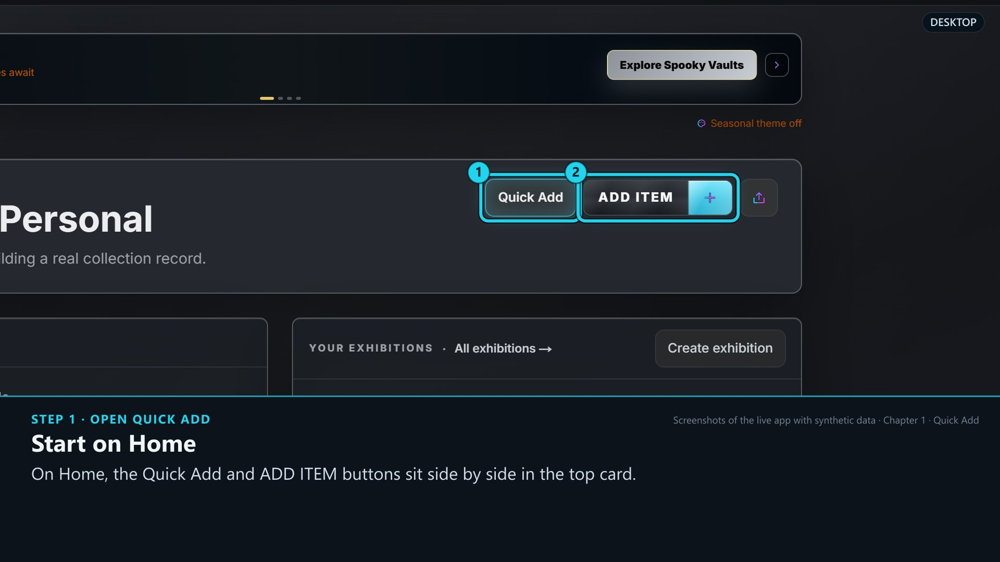
Start on Home
On Home, the Quick Add and ADD ITEM buttons sit side by side in the top card.
Narration and evidence
Start on Home. In the top card you will see two buttons side by side: Quick Add, and ADD ITEM. Quick Add is for several items at once. ADD ITEM is the full form for one item, covered in Chapter 2.
Evidence: {"quick":"/vault/quick","add":"/capture"}
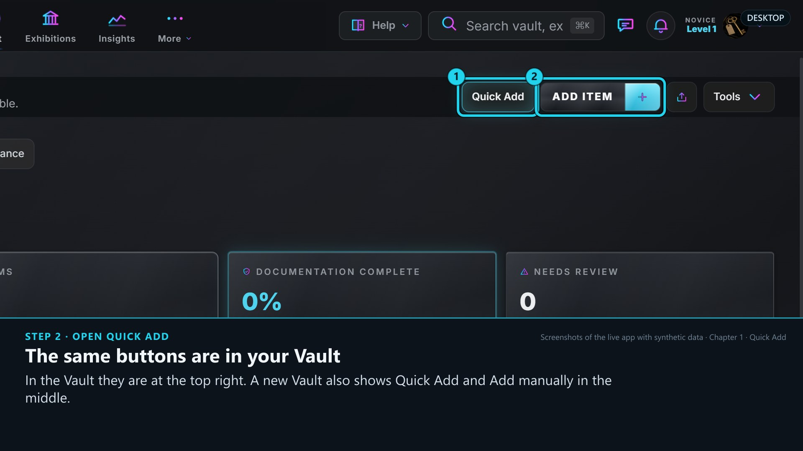
The same buttons are in your Vault
In the Vault they are at the top right. A new Vault also shows Quick Add and Add manually in the middle.
Narration and evidence
The same two buttons are in your Vault, at the top right. A brand-new Vault also shows four starting points in the middle of the page. Press Quick Add from either place.
Evidence: true
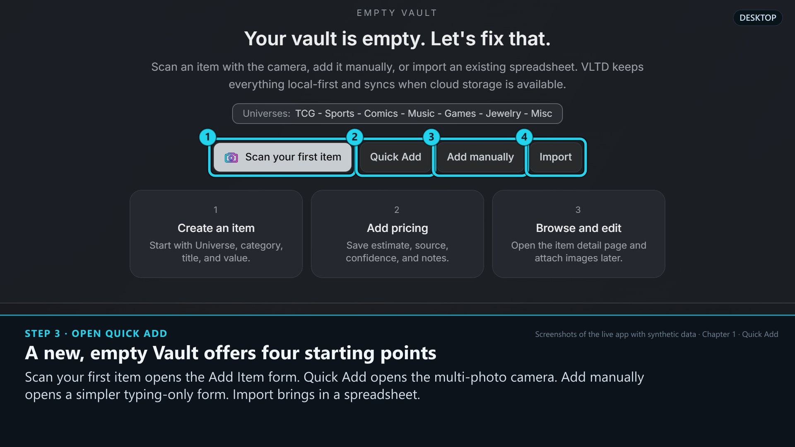
A new, empty Vault offers four starting points
Scan your first item opens the Add Item form. Quick Add opens the multi-photo camera. Add manually opens a simpler typing-only form. Import brings in a spreadsheet.
Narration and evidence
Here are the four starting points in an empty Vault, and where each one leads. Scan your first item opens the full Add Item form. Quick Add opens the multi-photo camera. Add manually opens a simpler, typing-only form. And Import brings in a spreadsheet.
Evidence: {"ok":true,"hrefs":{"Scan your first item":["/capture"],"Quick Add":["/vault/quick","/vault/quick"],"Add manually":["/vault/add"],"Import":["/vault/import"]}}
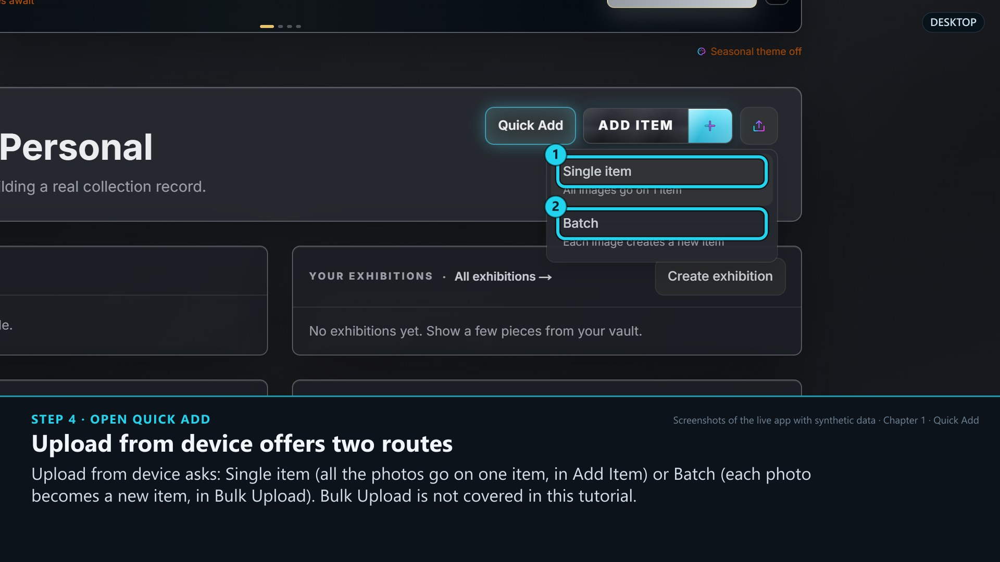
Upload from device offers two routes
Upload from device asks: Single item (all the photos go on one item, in Add Item) or Batch (each photo becomes a new item, in Bulk Upload). Bulk Upload is not covered in this tutorial.
Narration and evidence
If your photos are already on your device, press Upload from device on Home. It asks whether all the photos belong to one item, which opens Add Item, or whether each photo should become a new item, which opens Bulk Upload. Bulk Upload is not covered in this tutorial.
Evidence: ["/capture?openUpload=1","/vault/bulk"]
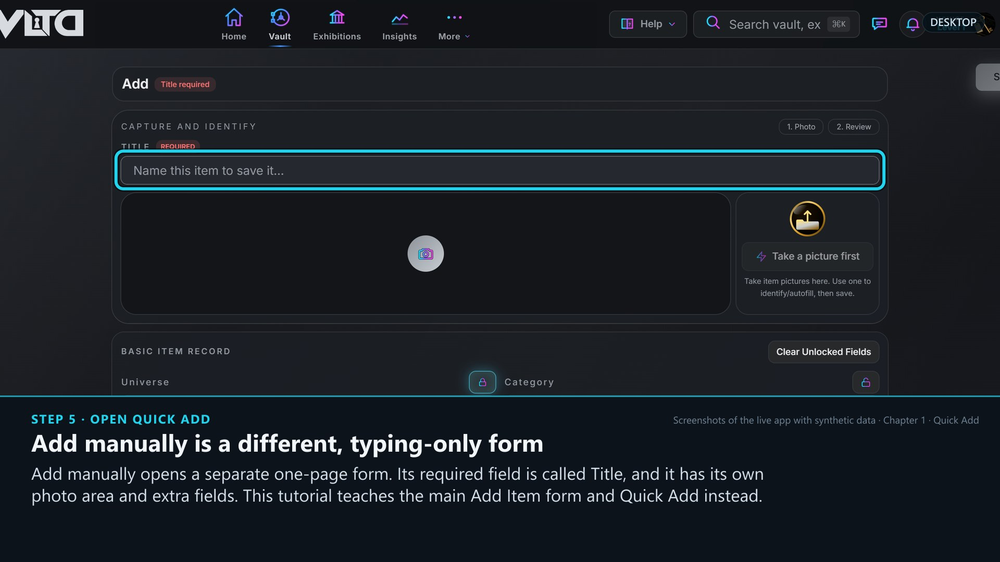
Add manually is a different, typing-only form
Add manually opens a separate one-page form. Its required field is called Title, and it has its own photo area and extra fields. This tutorial teaches the main Add Item form and Quick Add instead.
Narration and evidence
Add manually opens a different, one-page form. Its required field is called Title, and it has its own photo area and extra fields. This tutorial teaches the main Add Item form and Quick Add instead.
Evidence: {"ok":true,"p":"/vault/add"}
Allow the camera
- The first time, your browser asks to use the camera.
- Choose Allow. On a phone it may say While using the app.
- If you choose Block, Quick Add tells you so. Next, we show that message.
- Photos stay on your device until you save them to your Vault.
Narration
The first time you open Quick Add, your browser will ask for permission to use the camera. This question comes from your browser, not from VLTD, so we cannot show it in the recording. Choose Allow. On a phone it may offer While using the app, which is fine. If you choose Block by mistake, Quick Add will tell you, and the next screens show you that message and how to fix it.
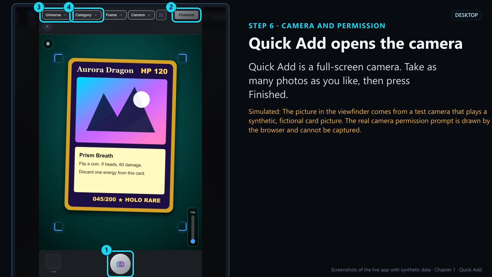
Quick Add opens the camera
Quick Add is a full-screen camera. Take as many photos as you like, then press Finished.
Narration and evidence
Quick Add opens a full-screen camera. Along the top you can choose a Universe and a Category, change the Frame, switch cameras, and scan a barcode. The round button takes a photo, and Finished is at the top right. In this recording the picture comes from a test camera that plays fictional images, because a real camera is not recorded here.
Evidence: {"path":"/vault/quick","feed":"tcg-card"}
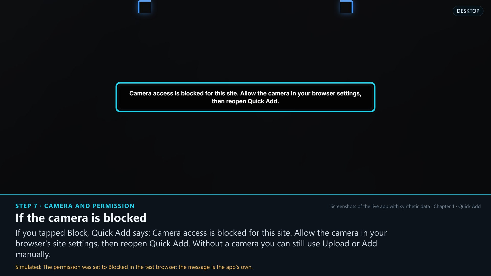
If the camera is blocked
If you tapped Block, Quick Add says: Camera access is blocked for this site. Allow the camera in your browser's site settings, then reopen Quick Add. Without a camera you can still use Upload or Add manually.
Narration and evidence
If you blocked the camera, Quick Add says so: camera access is blocked for this site. Allow the camera in your browser's site settings, then reopen Quick Add. If you cannot use a camera, Upload and Add manually still work.
Evidence: true
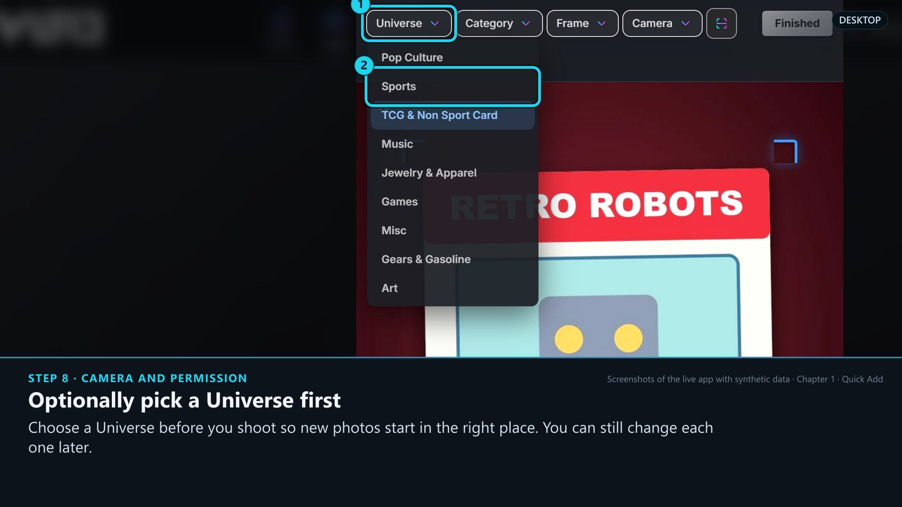
Optionally pick a Universe first
Choose a Universe before you shoot so new photos start in the right place. You can still change each one later.
Narration and evidence
Before you start shooting, you can choose a Universe, such as Sports. It tells Quick Add where new photos should start. You can always change it later for each item.
Evidence: true
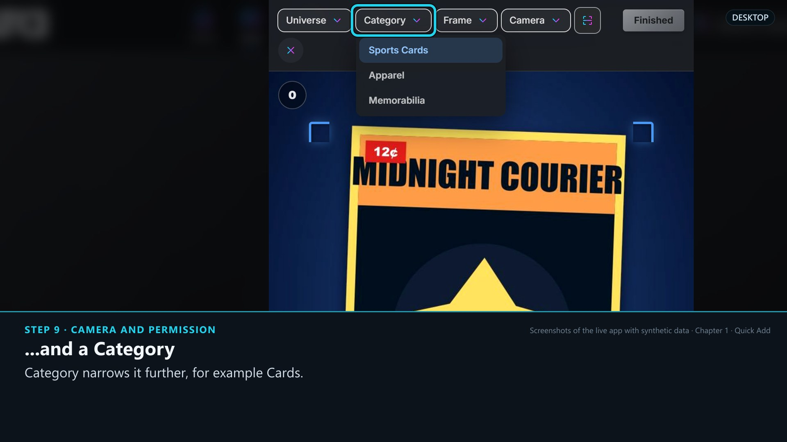
...and a Category
Category narrows it further, for example Cards.
Narration and evidence
Category narrows it down further. Here, with Sports chosen, the choices include Sports Cards. Again, this is optional and can be corrected for each item in the review.
Evidence: {"ok":true,"menu":"Sports Cards Apparel Memorabilia"}
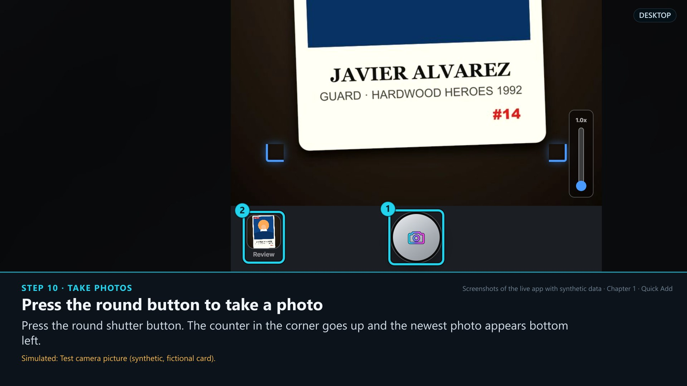
Press the round button to take a photo
Press the round shutter button. The counter in the corner goes up and the newest photo appears bottom left.
Narration and evidence
Line up the item and press the round button. The counter in the corner goes up to one, and the newest photo appears bottom left. Take one photo per item.
Evidence: true
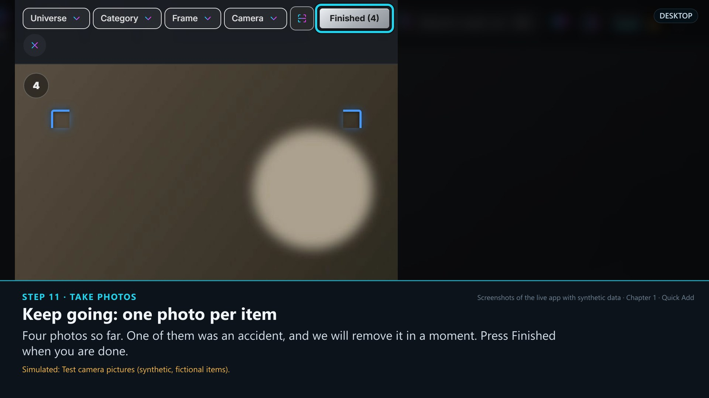
Keep going: one photo per item
Four photos so far. One of them was an accident, and we will remove it in a moment. Press Finished when you are done.
Narration and evidence
Keep going: one photo per item. We changed the Universe between photos to match each item. We now have four photos, and one of them was an accident. Press Finished when you are done.
Evidence: true
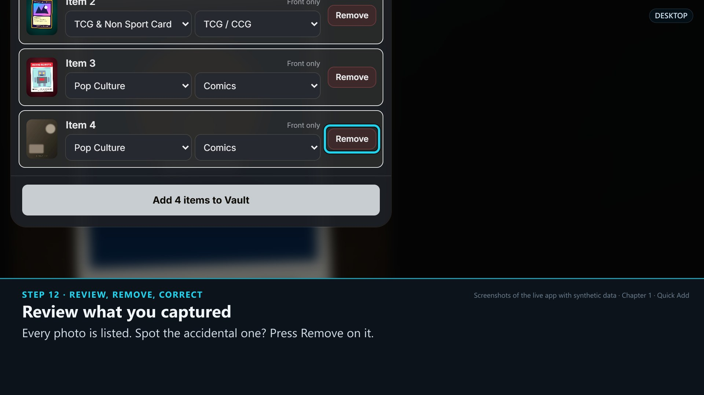
Review what you captured
Every photo is listed. Spot the accidental one? Press Remove on it.
Narration and evidence
Finished opens a review. Every photo is listed with its own Universe and Category. If a photo is bad or accidental, press Remove on it. The fourth one is a blurry floor shot, so we remove it.
Evidence: true
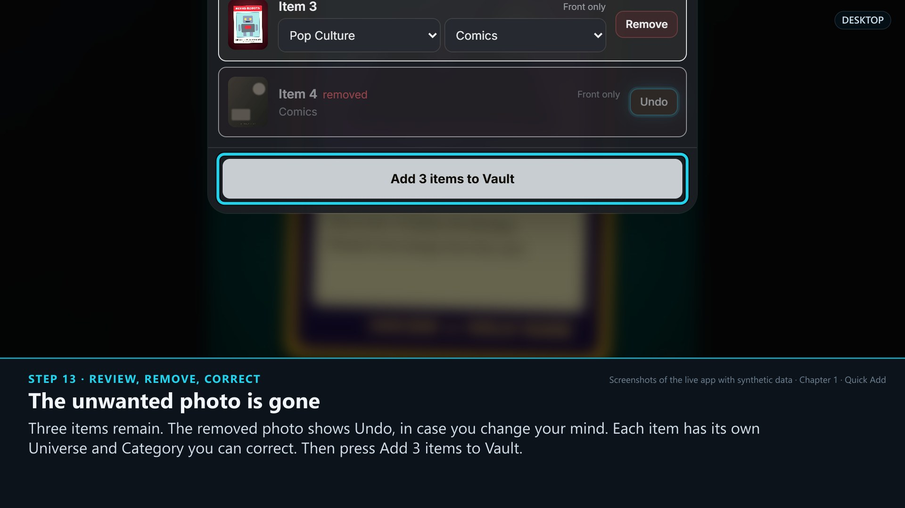
The unwanted photo is gone
Three items remain. The removed photo shows Undo, in case you change your mind. Each item has its own Universe and Category you can correct. Then press Add 3 items to Vault.
Narration and evidence
Three items remain, and the removed photo shows Undo in case you change your mind. The button now says Add 3 items to Vault.
Evidence: true
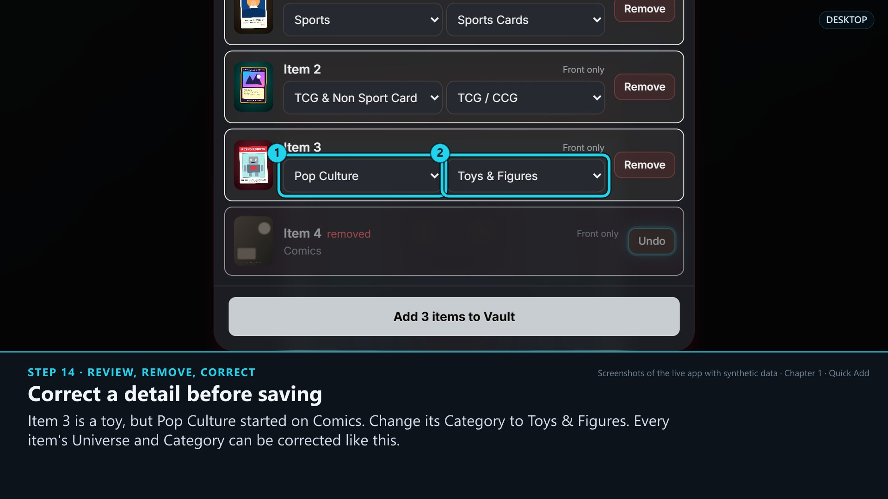
Correct a detail before saving
Item 3 is a toy, but Pop Culture started on Comics. Change its Category to Toys & Figures. Every item's Universe and Category can be corrected like this.
Narration and evidence
You can also correct details here. The third item is a toy, but Pop Culture started on Comics, so we change its Category to Toys and Figures.
Evidence: ["Sports","Sports Cards","TCG & Non Sport Card","TCG / CCG","Pop Culture","Toys & Figures"]
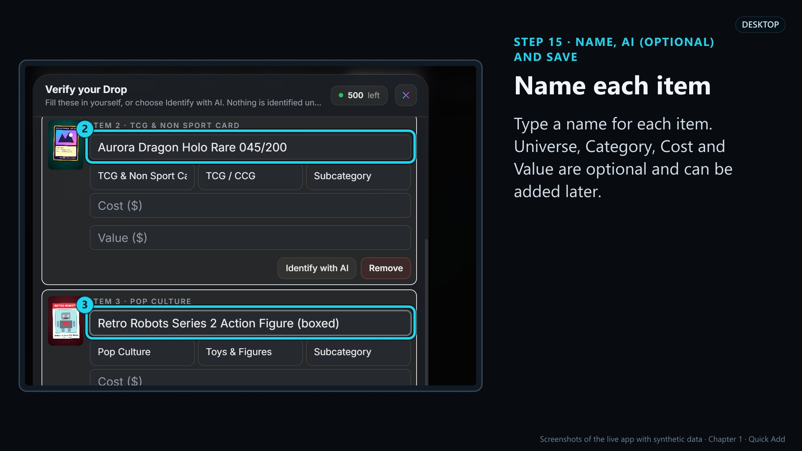
Name each item
Type a name for each item. Universe, Category, Cost and Value are optional and can be added later.
Narration and evidence
Next you name the items. Type a name for each one. Universe, Category, Cost and Value are optional and can be added later. An item saved without a name is called Untitled Item, so it is worth typing one.
Evidence: ["1992 Hardwood Heroes Javier Alvarez Rookie #14","Aurora Dragon Holo Rare 045/200","Retro Robots Series 2 Action Figure (boxed)"]
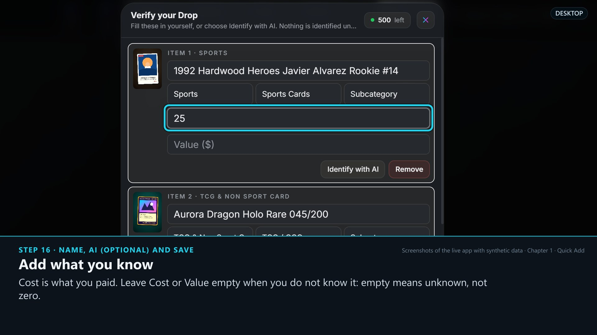
Add what you know
Cost is what you paid. Leave Cost or Value empty when you do not know it: empty means unknown, not zero.
Narration and evidence
Add what you know. Cost is what you paid. Leave Cost or Value empty when you do not know it. Empty means unknown, not zero.
Evidence: 25
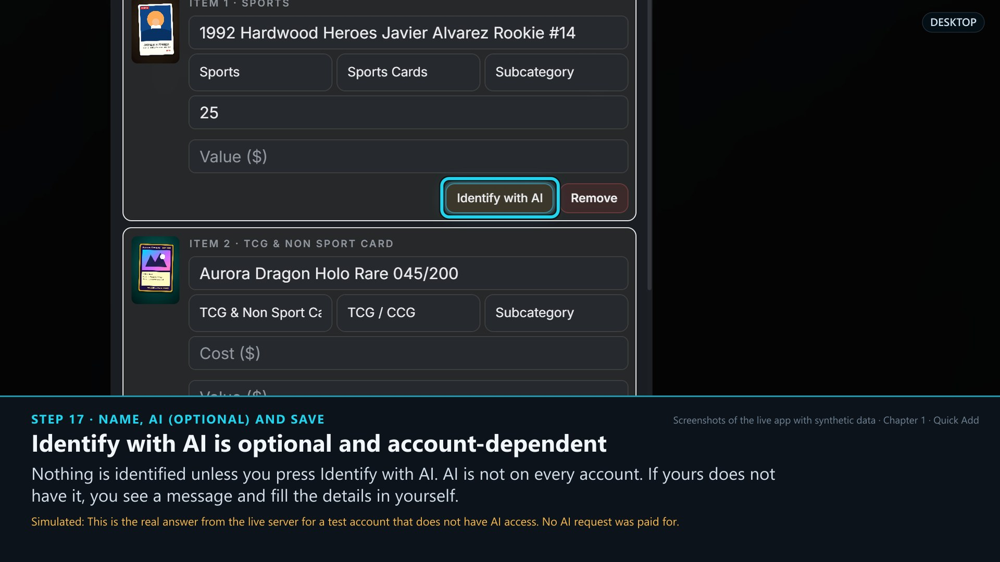
Identify with AI is optional and account-dependent
Nothing is identified unless you press Identify with AI. AI is not on every account. If yours does not have it, you see a message and fill the details in yourself.
Narration and evidence
Every item has an Identify with AI button. It is optional, nothing is identified unless you press it, and it is not available on every account. On this test account it is not, so the page says: AI scans are not available on this account. If you see that, just type the details yourself. The counter at the top shows an allowance, but it does not change whether your account has AI.
Evidence: {"ok":true,"snippet":"Verify your Drop Fill these in yourself, or choose Identify with AI. Nothing is identified until you ask. 500 left ITEM 1 · SPORTS Pop Culture Sports TCG & Non Sport Card Music Jewelry & Apparel Games Misc Gears & Gasoline Art Category Sp
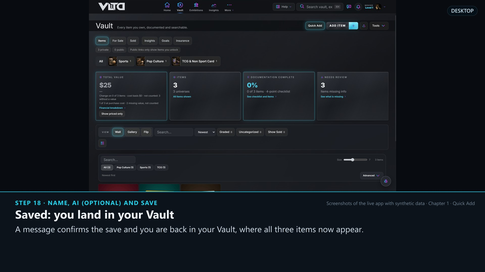
Saved: you land in your Vault
A message confirms the save and you are back in your Vault, where all three items now appear.
Narration and evidence
Press Save 3 items to Vault. A message confirms the save, and you land in your Vault. The total value shows twenty-five dollars: only the first item has a cost, and the others have neither a cost nor a value, so they are not counted.
Evidence: {"ok":true,"count":3,"rows":[{"t":"1992 Hardwood Heroes Javier Alvarez Rookie #14","cv":null,"pp":25,"u":"SPORTS","c":"SPORTS_CARDS"},{"t":"Aurora Dragon Holo Rare 045/200","cv":null,"pp":null,"u":"TCG","c":"TCG_CCG"},{"t":"Retro Robots Series 2 Action Figure
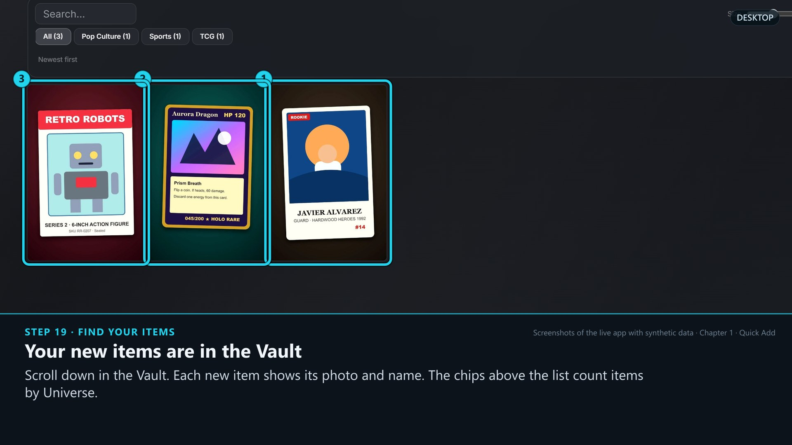
Your new items are in the Vault
Scroll down in the Vault. Each new item shows its photo and name. The chips above the list count items by Universe.
Narration and evidence
Scroll down in the Vault to see the new items, each with its photo. The chips above the list count items by Universe.
Evidence: true
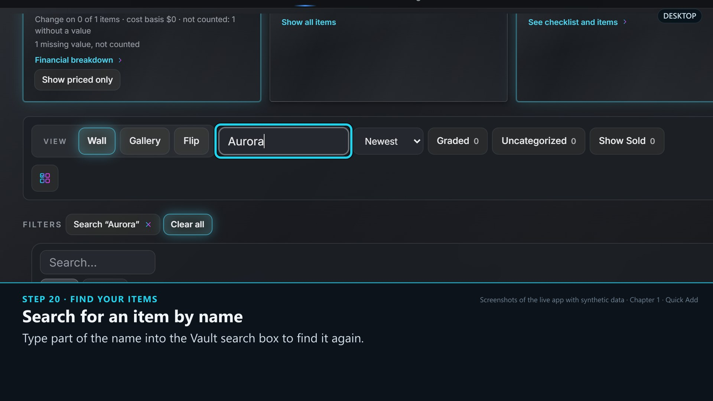
Search for an item by name
Type part of the name into the Vault search box to find it again.
Narration and evidence
To find an item again, type part of its name into the search box above the list.
Evidence: {"ok":true}
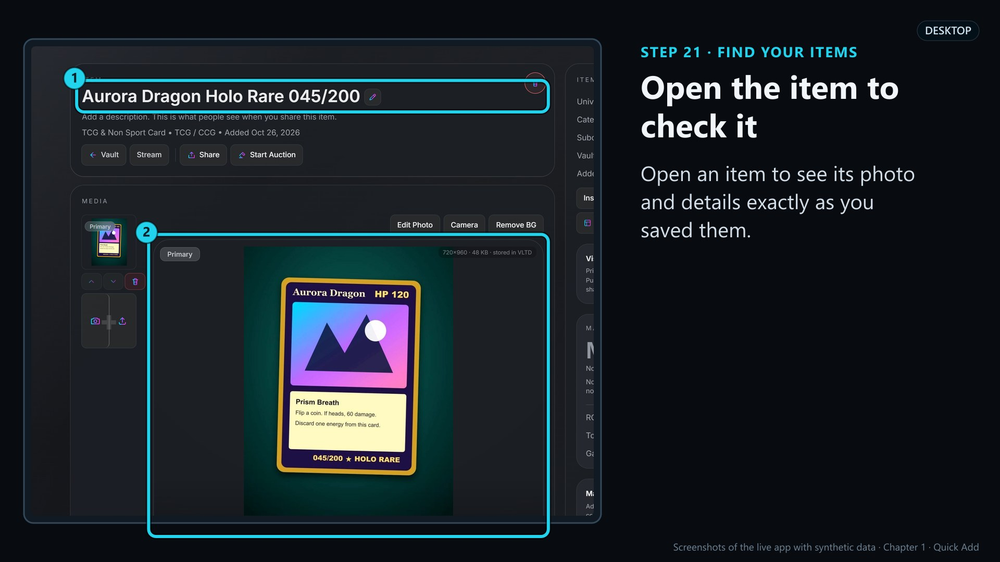
Open the item to check it
Open an item to see its photo and details exactly as you saved them.
Narration and evidence
Open an item to check it. You see the photo and details exactly as saved. This item has no cost and no value, so the Market panel says Missing value and Total cost says Not recorded. Nothing has been invented.
Evidence: {"ok":true,"path":"/vault/item/1793007424080_k2l8ib"}
Quick Add on a phone
- The steps are the same. The layout changes.
- Quick Add and ADD ITEM sit in a bar near the bottom of Home and the Vault.
- The tab bar stays at the bottom: Home, Vault, Exhibitions, Lounge, Discover.
- Sheets are taller and the buttons are bigger, so scroll inside a sheet to see every item.
Narration
Now the same flow on a phone. The steps are identical, but the layout is different. Quick Add and ADD ITEM sit in a bar near the bottom of Home and the Vault, above the tab bar. Sheets are taller and the buttons are larger, so scroll inside a sheet to reach every item. The screens that follow were recorded in a phone-sized test browser, not on a physical phone.
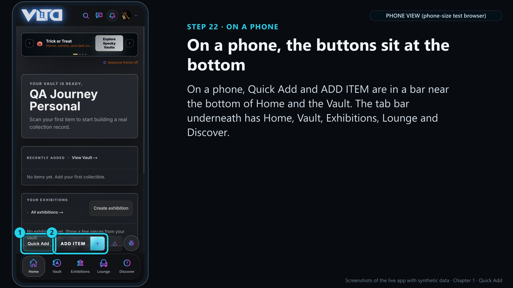
On a phone, the buttons sit at the bottom
On a phone, Quick Add and ADD ITEM are in a bar near the bottom of Home and the Vault. The tab bar underneath has Home, Vault, Exhibitions, Lounge and Discover.
Narration and evidence
On a phone, Quick Add and ADD ITEM are in a bar near the bottom of the screen, above the tab bar with Home, Vault, Exhibitions, Lounge and Discover.
Evidence: {"q":"/vault/quick","i":"/capture"}
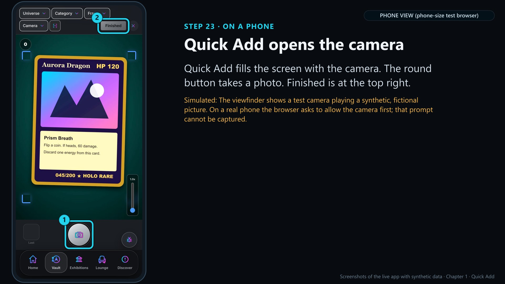
Quick Add opens the camera
Quick Add fills the screen with the camera. The round button takes a photo. Finished is at the top right.
Narration and evidence
Quick Add fills the screen with the camera. The round button takes a photo, and Finished is at the top right.
Evidence: {"path":"/vault/quick"}
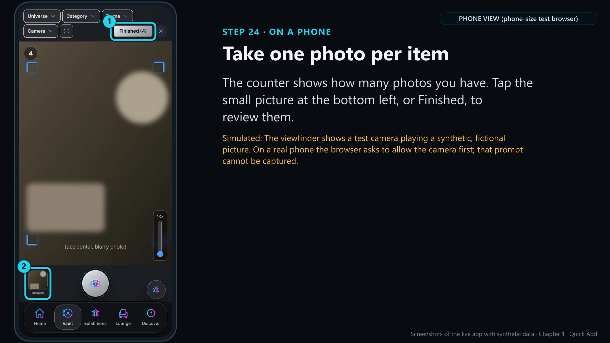
Take one photo per item
The counter shows how many photos you have. Tap the small picture at the bottom left, or Finished, to review them.
Narration and evidence
Take one photo per item. The counter shows how many you have. Tap Finished, or the small picture at the bottom left, to review them.
Evidence: true
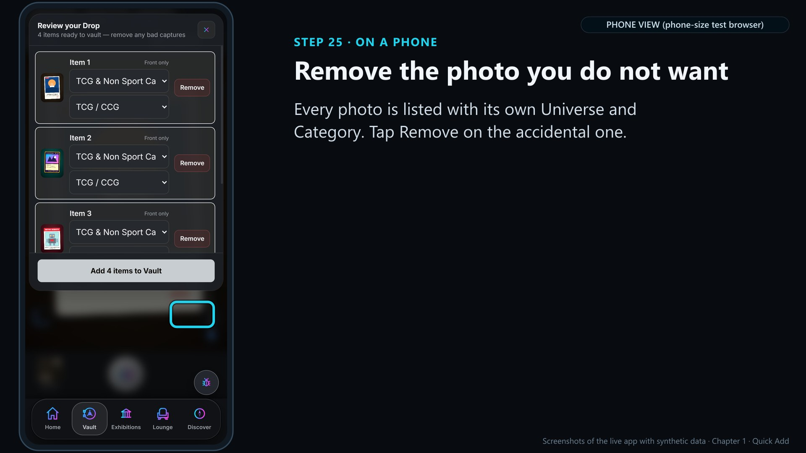
Remove the photo you do not want
Every photo is listed with its own Universe and Category. Tap Remove on the accidental one.
Narration and evidence
Each photo is listed with its own Universe and Category. Tap Remove on any you do not want, then Add items to Vault at the bottom.
Evidence: true
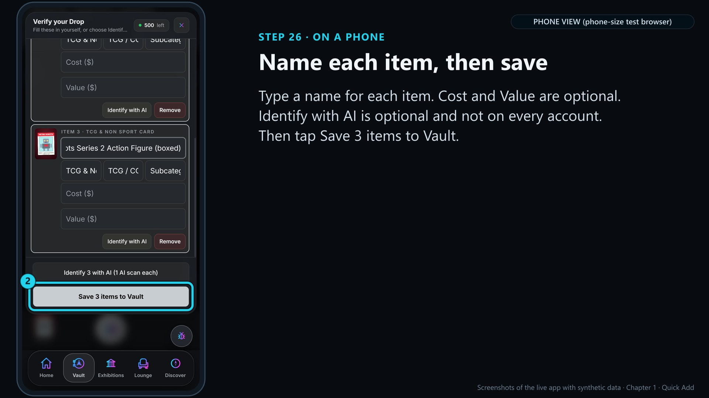
Name each item, then save
Type a name for each item. Cost and Value are optional. Identify with AI is optional and not on every account. Then tap Save 3 items to Vault.
Narration and evidence
Type a name for each item. Cost and Value are optional. Identify with AI is optional and not on every account. Then tap Save.
Evidence: ["1992 Hardwood Heroes Javier Alvarez Rookie #14","Aurora Dragon Holo Rare 045/200","Retro Robots Series 2 Action Figure (boxed)"]
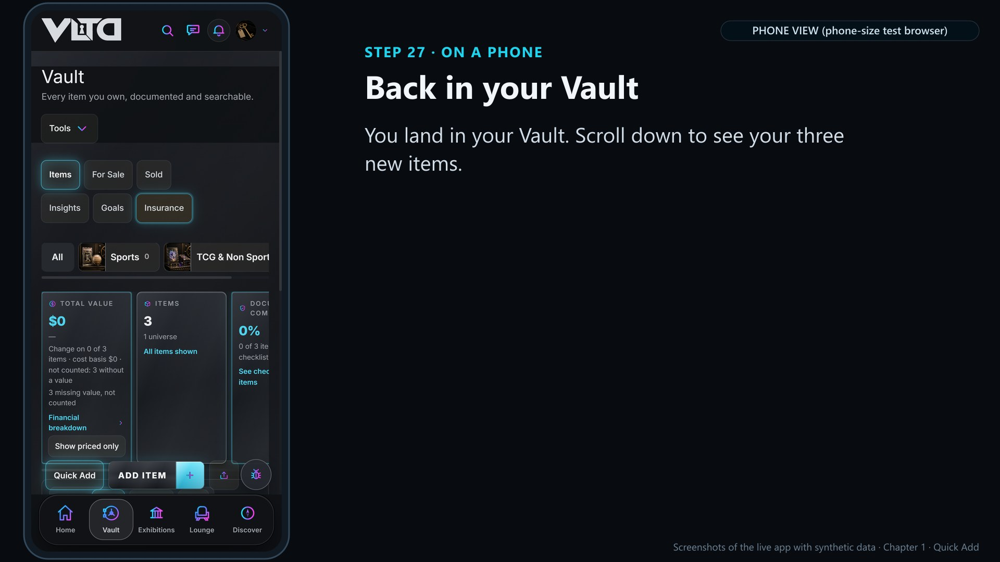
Back in your Vault
You land in your Vault. Scroll down to see your three new items.
Narration and evidence
You land back in your Vault. Scroll down to see your new items.
Evidence: {"ok":true,"n":3,"path":"/vault"}
You used Quick Add
- Open Quick Add from Home or the Vault.
- Take one photo per item, then press Finished.
- Remove unwanted photos, correct Universe and Category, type names.
- Save. Find your items in the Vault. Open one to check it.
- Next: Chapter 2, the full Add Item form.
Narration
That is Quick Add. You opened it from Home or the Vault, took one photo per item, pressed Finished, removed the accidental photo, corrected a category, typed names, and saved. Your items are in the Vault, and opening one shows the photo and details you saved. Next, Chapter 2 shows the full Add Item form, where you can record much more about a single item.
Chapter 2 — Add Item (9:19)
Captions are burned into the picture and also provided as a caption track (VTT). Step list below: numbered screenshots with the same highlights.
Add Item
- The full form for one item: photos, name, category, costs and value.
- You need: one item, or a photo of it, and about 8 minutes.
- Required: Item name. Everything else is optional.
- Cost and value are separate. Empty means unknown. 0 means zero.
Narration
Chapter 2 is the full Add Item form. Use it when you want to record one item properly: several photos, a category, what you paid and what it is worth. You need one item, or a photo of it, and about eight minutes. Only the Item name is required. Everything else is optional, and the form treats cost and value as separate things. An empty box means unknown. A zero means the amount really is zero. We will see why that matters.
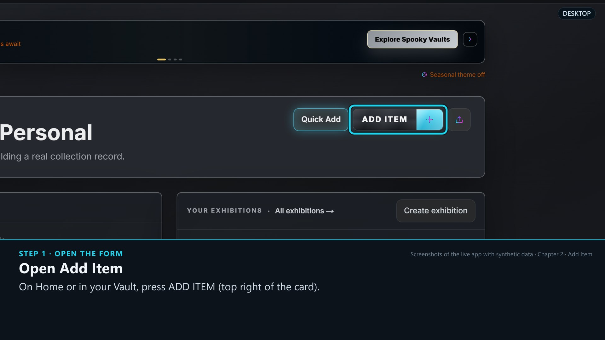
Open Add Item
On Home or in your Vault, press ADD ITEM (top right of the card).
Narration and evidence
Chapter 2. On Home, or in your Vault, press ADD ITEM, at the top right of the card.
Evidence: /capture
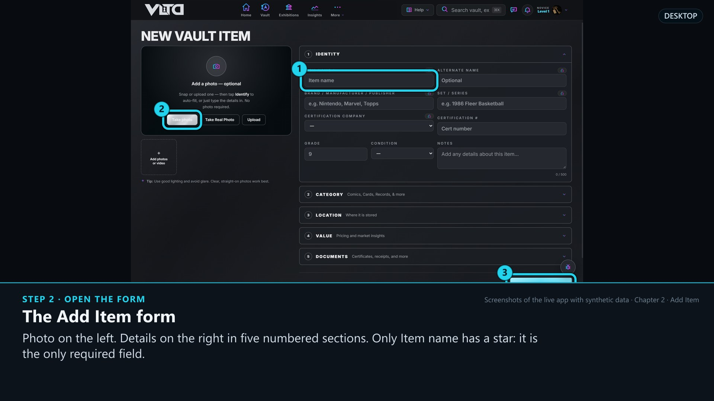
The Add Item form
Photo on the left. Details on the right in five numbered sections. Only Item name has a star: it is the only required field.
Narration and evidence
This is the Add Item form, called New Vault Item. The photo area is on the left. The details are on the right, in five numbered sections: Identity, Category, Location, Value and Documents. Only Item name has a star: it is the only required field.
Evidence: {"ok":true,"p":"/capture"}
What the form needs
- Required: Item name (marked with a star).
- Optional: photos, brand, set or series, certification, grade, condition, notes.
- Optional: Universe, Category and Subcategory; location; purchase price; current value.
- Extra costs (Tax, Shipping, Fees) are added after saving, on the item page.
- Saving with no name does nothing. The cursor returns to Item name.
Narration
Here is what the form needs. The only required field is Item name, marked with a star. Everything else is optional: photos, brand, set or series, certification and grade, condition, notes, the Universe and Category, where the item is stored, what you paid, and what it is worth. Extra costs such as tax, shipping and fees are not on this form. You add them after saving, on the item's own page, and we will do that in a moment.
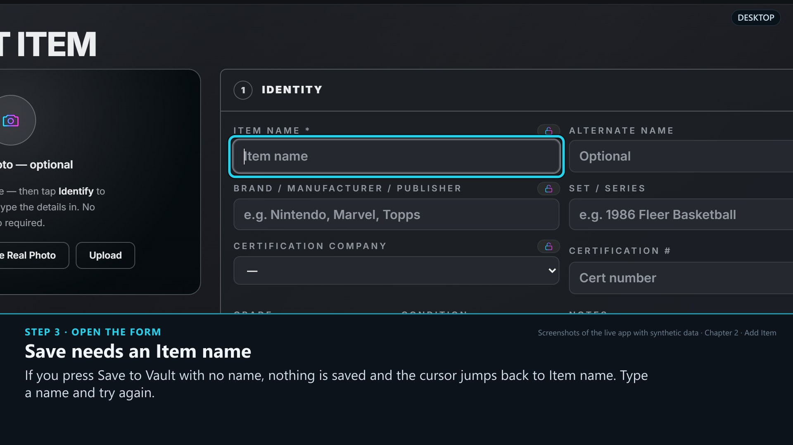
Save needs an Item name
If you press Save to Vault with no name, nothing is saved and the cursor jumps back to Item name. Type a name and try again.
Narration and evidence
If you press Save to Vault without typing a name, nothing is saved, and the cursor jumps back to Item name. Type a name and try again.
Evidence: {"ok":true,"rows":0,"hint":true}
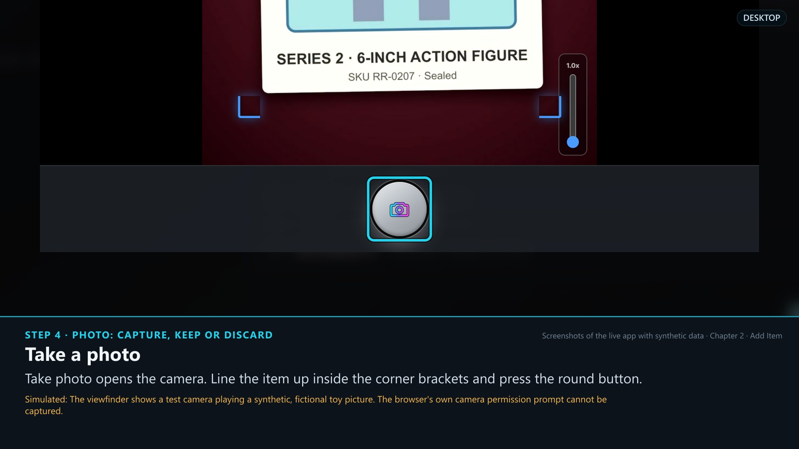
Take a photo
Take photo opens the camera. Line the item up inside the corner brackets and press the round button.
Narration and evidence
Take photo opens the camera. Line the item up inside the corner brackets and press the round button. As before, this recording uses a test camera with a fictional picture.
Evidence: true
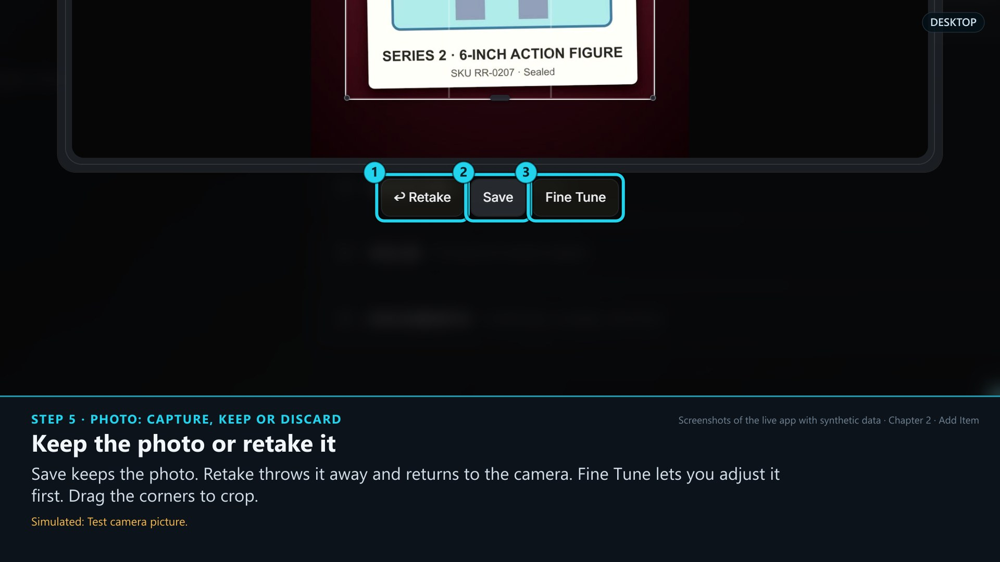
Keep the photo or retake it
Save keeps the photo. Retake throws it away and returns to the camera. Fine Tune lets you adjust it first. Drag the corners to crop.
Narration and evidence
After you capture, you choose. Save keeps the photo. Retake throws it away and returns to the camera. Fine Tune lets you adjust it first, and you can drag the corners to crop.
Evidence: true
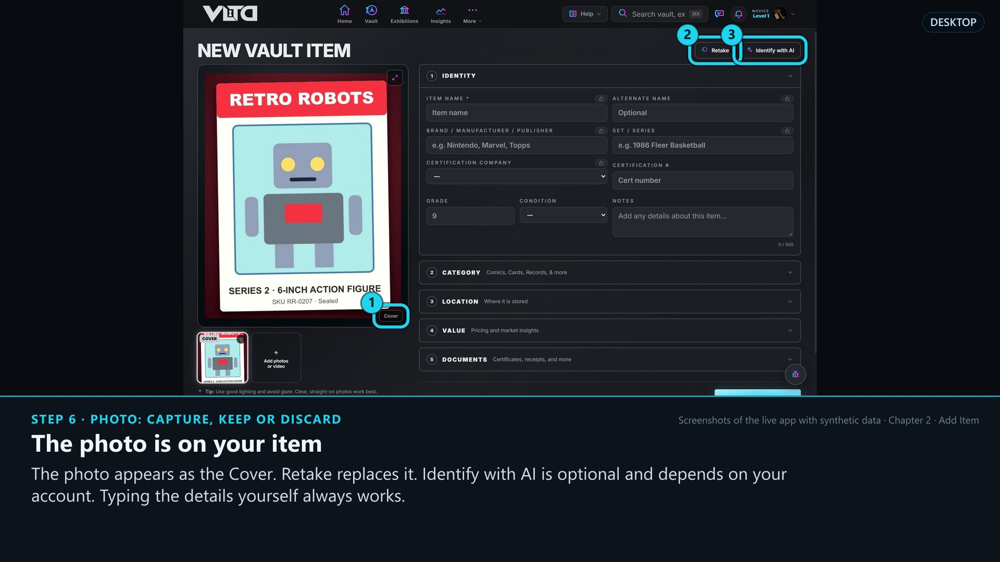
The photo is on your item
The photo appears as the Cover. Retake replaces it. Identify with AI is optional and depends on your account. Typing the details yourself always works.
Narration and evidence
The photo is now on your item and is marked as the Cover. Retake replaces it. Identify with AI is optional and depends on your account. Typing the details yourself always works.
Evidence: true
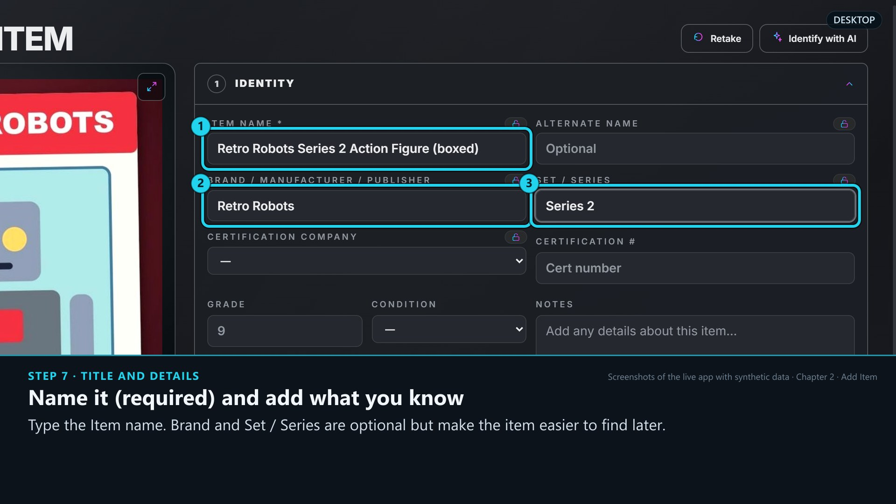
Name it (required) and add what you know
Type the Item name. Brand and Set / Series are optional but make the item easier to find later.
Narration and evidence
Type the Item name. Brand and Set or Series are optional, but they make the item easier to find later.
Evidence: ["Retro Robots Series 2 Action Figure (boxed)","Retro Robots","Series 2"]
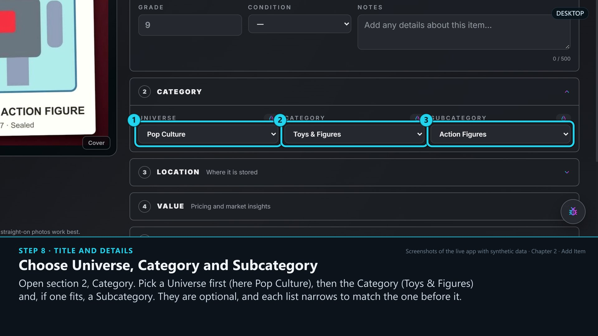
Choose Universe, Category and Subcategory
Open section 2, Category. Pick a Universe first (here Pop Culture), then the Category (Toys & Figures) and, if one fits, a Subcategory. They are optional, and each list narrows to match the one before it.
Narration and evidence
Open section 2, Category. Choose a Universe first, here Pop Culture. Then choose a Category, here Toys and Figures, and if one fits, a Subcategory such as Action Figures. They are optional, and each list narrows to match the one before.
Evidence: ["Pop Culture","Toys & Figures","Action Figures"]
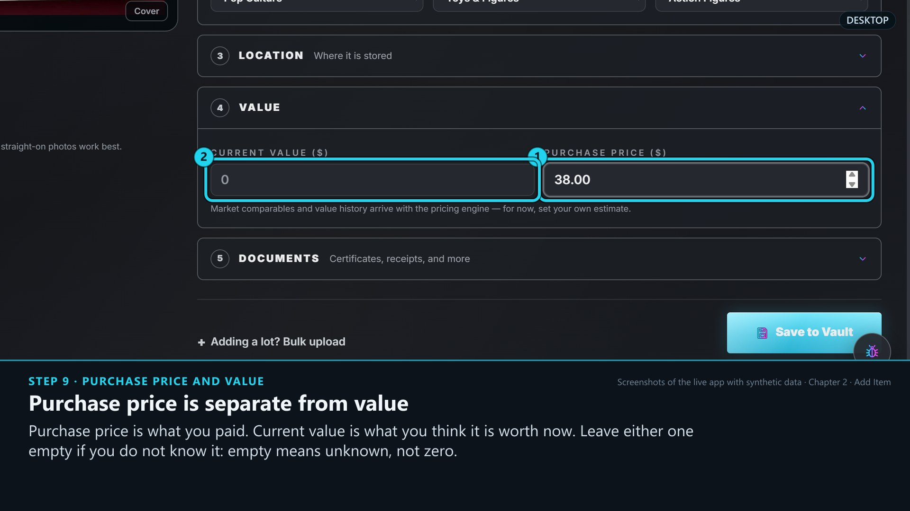
Purchase price is separate from value
Purchase price is what you paid. Current value is what you think it is worth now. Leave either one empty if you do not know it: empty means unknown, not zero.
Narration and evidence
Open section 4, Value. Purchase price is what you paid. Current value is what you think it is worth now. We typed thirty-eight dollars for the purchase price and left the value empty, because we do not know it. Empty means unknown, not zero.
Evidence: ["38.00",""]
Blank, zero and valuation
- Blank = unknown. The item has no cost or value on record.
- 0 = zero. A gift, or a value you decided is nothing.
- An item with a purchase price but no valuation counts at its purchase price in your Vault total. The Vault says so. No value is invented or stored.
- Add a valuation whenever you know one. It replaces the stand-in.
Narration
A word about cost and value, because it affects your totals. If you leave a box empty, VLTD treats it as unknown. If you type zero, VLTD treats it as zero. A gift can honestly have a purchase price of zero. When an item has a purchase price but no valuation, your Vault total counts it at what you paid and says so on the Total value card. It does not store an invented valuation. As soon as you know a real value, add it, and it takes over.
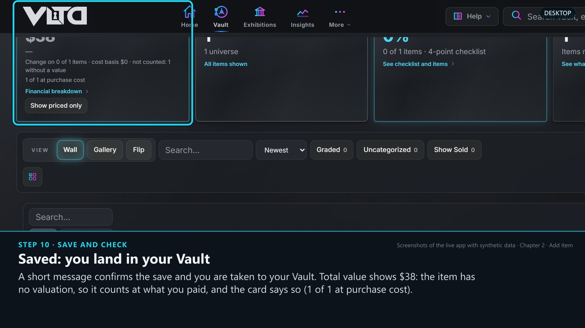
Saved: you land in your Vault
A short message confirms the save and you are taken to your Vault. Total value shows $38: the item has no valuation, so it counts at what you paid, and the card says so (1 of 1 at purchase cost).
Narration and evidence
Press Save to Vault. A short message confirms the save and you are taken to your Vault. The Total value card shows thirty-eight dollars. The item has no valuation, so it counts at what you paid, and the card says so: one of one at purchase cost. No valuation was stored.
Evidence: {"ok":true,"cv":null}
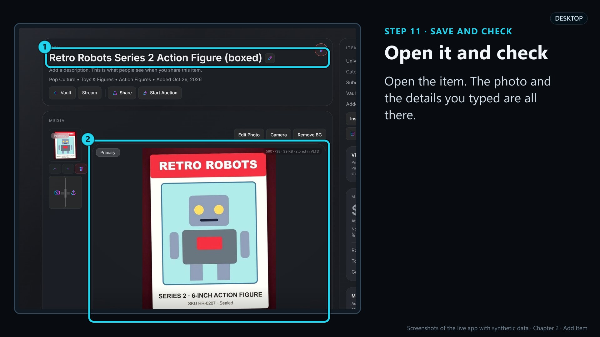
Open it and check
Open the item. The photo and the details you typed are all there.
Narration and evidence
Open the item. The photo and the details you typed are all there.
Evidence: {"ok":true,"p":"/vault/item/1793008622711_0i5jxq"}
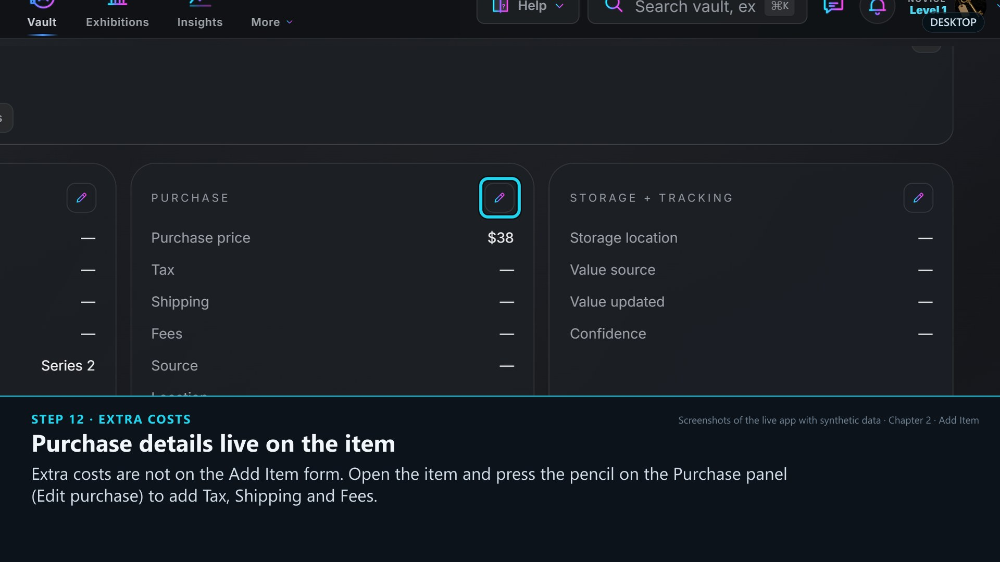
Purchase details live on the item
Extra costs are not on the Add Item form. Open the item and press the pencil on the Purchase panel (Edit purchase) to add Tax, Shipping and Fees.
Narration and evidence
Extra costs are not on the Add Item form. On the item page, find the Purchase panel and press its pencil, labelled Edit purchase.
Evidence: true
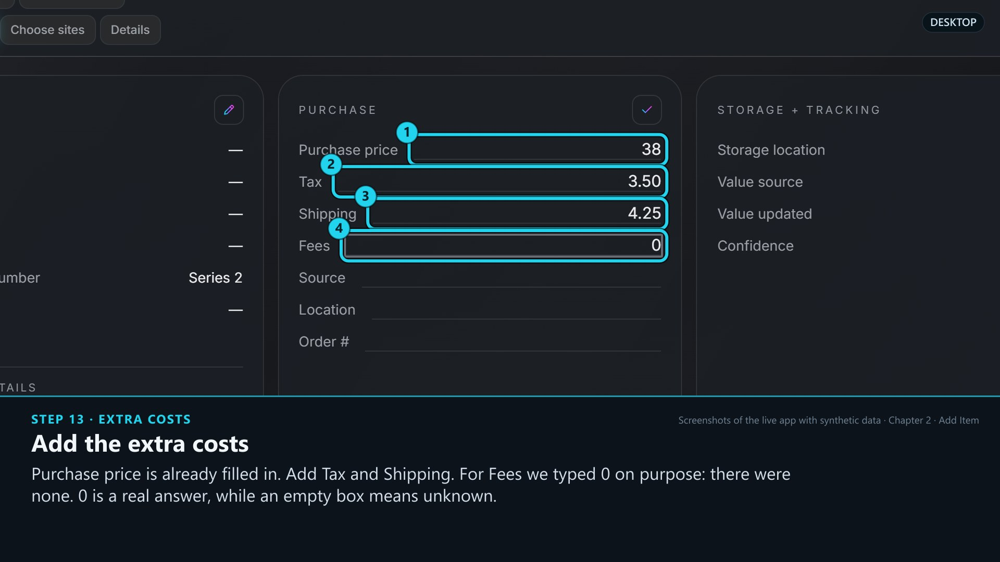
Add the extra costs
Purchase price is already filled in. Add Tax and Shipping. For Fees we typed 0 on purpose: there were none. 0 is a real answer, while an empty box means unknown.
Narration and evidence
Purchase price is already filled in. Add Tax and Shipping. For Fees we typed zero on purpose, because there were none. Zero is a real answer. An empty box means unknown.
Evidence: ["38","3.50","4.25","0",""]
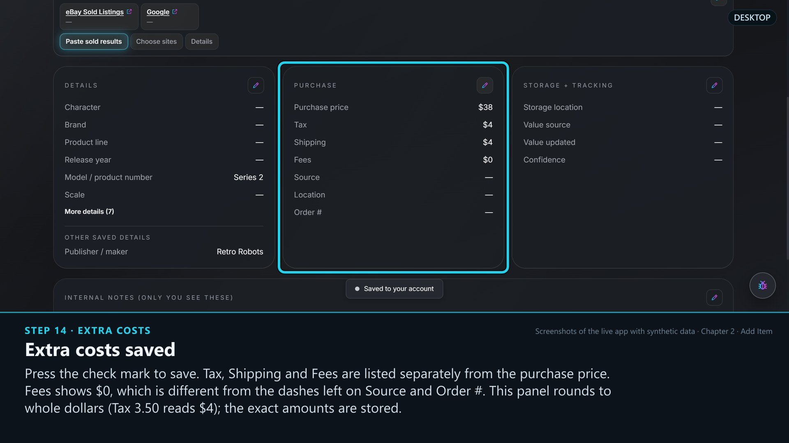
Extra costs saved
Press the check mark to save. Tax, Shipping and Fees are listed separately from the purchase price. Fees shows $0, which is different from the dashes left on Source and Order #. This panel rounds to whole dollars (Tax 3.50 reads $4); the exact amounts are stored.
Narration and evidence
Press the check mark to save. Tax, Shipping and Fees are now listed separately from the purchase price. Fees shows zero dollars, which is different from the dashes still on Source and Order number. One thing to know: this panel rounds to whole dollars, so tax of three fifty reads as four dollars here. The exact amounts are stored.
Evidence: {"ok":true,"pp":38,"tax":3.5,"ship":4.25,"fees":0,"cv":null,"src":null}
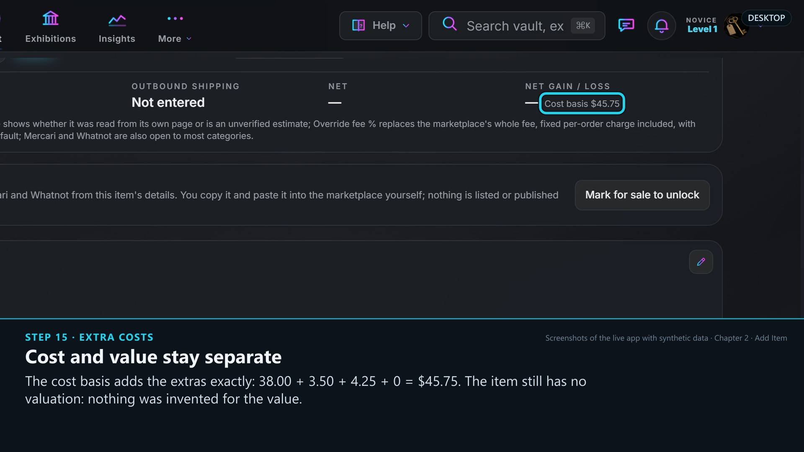
Cost and value stay separate
The cost basis adds the extras exactly: 38.00 + 3.50 + 4.25 + 0 = $45.75. The item still has no valuation: nothing was invented for the value.
Narration and evidence
The cost basis adds the extras exactly: thirty-eight, plus three fifty, plus four twenty-five, plus nothing, makes forty-five seventy-five. The item still has no valuation, and nothing was invented for it.
Evidence: {"ok":true,"cost":"Total cost $46"}
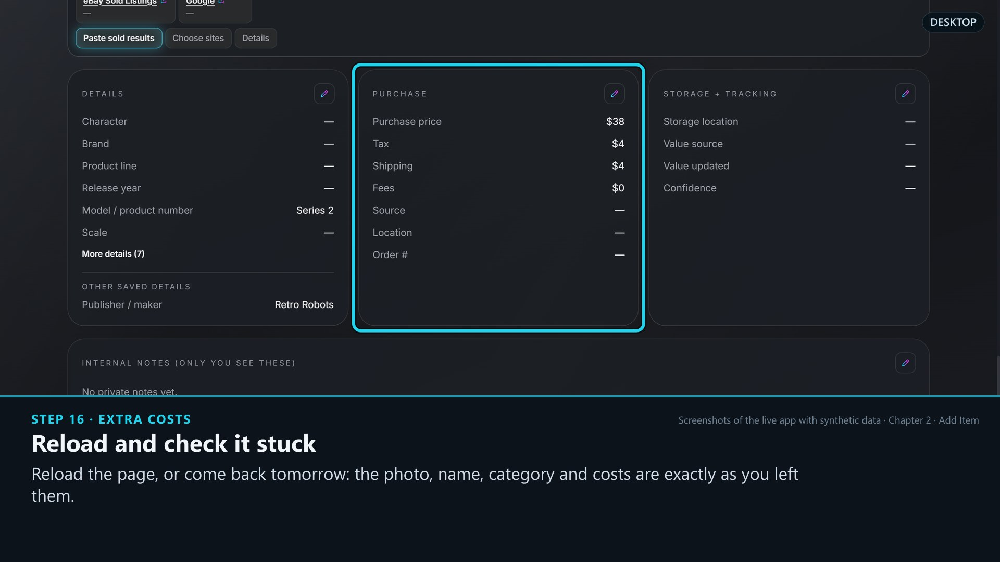
Reload and check it stuck
Reload the page, or come back tomorrow: the photo, name, category and costs are exactly as you left them.
Narration and evidence
Reload the page, or come back tomorrow. The photo, name, category and costs are exactly as you left them.
Evidence: {"ok":true,"img":true}
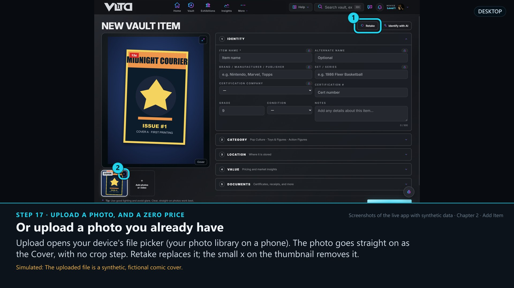
Or upload a photo you already have
Upload opens your device's file picker (your photo library on a phone). The photo goes straight on as the Cover, with no crop step. Retake replaces it; the small x on the thumbnail removes it.
Narration and evidence
You can also upload a photo you already have. Upload opens your device's file picker, or your photo library on a phone. The photo goes straight on as the Cover, with no crop step. Retake replaces it, and the small x on the thumbnail removes it. This file is a fictional comic cover.
Evidence: {"ok":true,"up":{"clicked":true,"dialog":true,"multiple":false}}
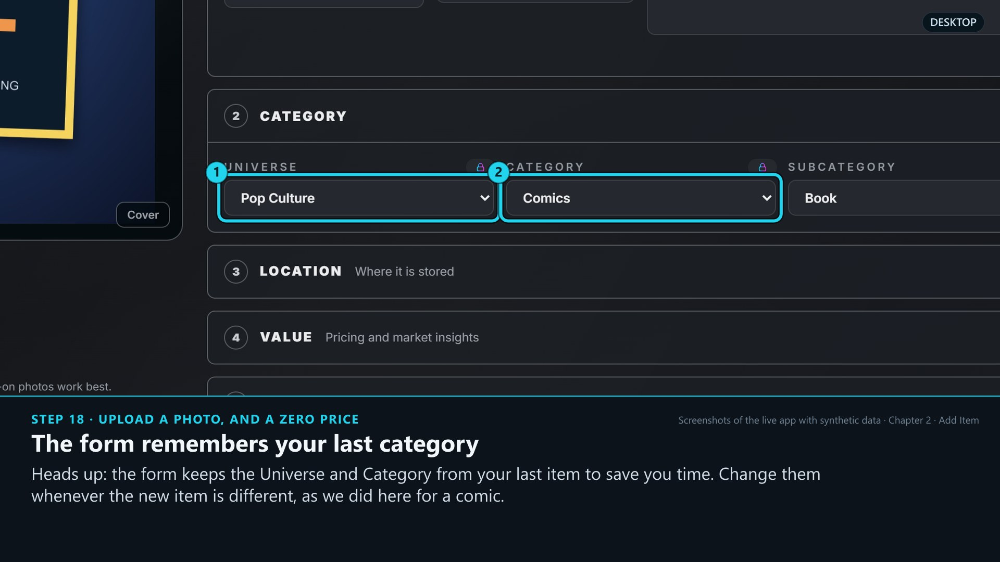
The form remembers your last category
Heads up: the form keeps the Universe and Category from your last item to save you time. Change them whenever the new item is different, as we did here for a comic.
Narration and evidence
A heads-up: the form remembers the Universe and Category from your last item to save you time. Change them whenever the new item is different, as we did here for a comic.
Evidence: ["Pop Culture","Comics"]
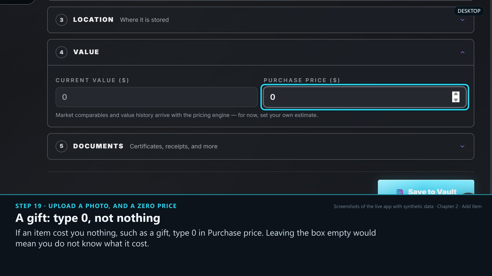
A gift: type 0, not nothing
If an item cost you nothing, such as a gift, type 0 in Purchase price. Leaving the box empty would mean you do not know what it cost.
Narration and evidence
If an item cost you nothing, such as a gift, type zero in Purchase price. Leaving the box empty would mean you do not know what it cost.
Evidence: 0
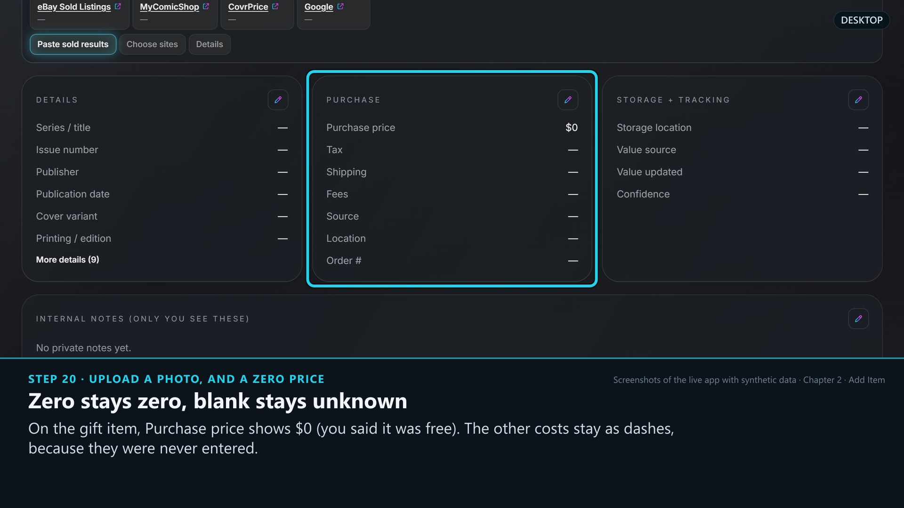
Zero stays zero, blank stays unknown
On the gift item, Purchase price shows $0 (you said it was free). The other costs stay as dashes, because they were never entered.
Narration and evidence
On the gift item, Purchase price shows zero. You told VLTD it was free. The other costs stay as dashes, because they were never entered. Zero stays zero, and blank stays unknown.
Evidence: {"ok":true,"giftPrice":0,"giftValue":null,"giftTax":null}
Add Item on a phone
- Same form, one column: photo first, then the five sections.
- Take photo opens the in-app camera. Take Real Photo opens your phone's camera app. Upload picks from your photo library.
- In our phone-size test the round camera button sits partly behind the tab bar. Tap its visible top edge, or use Upload or Take Real Photo.
- Scroll the form to reach the later sections.
Narration
On a phone the Add Item form is a single column. The photo area comes first, and the five numbered sections follow below it. Take photo opens the in-app camera, Take Real Photo opens your phone's own camera app, and Upload lets you choose a photo you already have. In our phone-sized test, the round camera button sat partly behind the tab bar. If that happens to you, tap the visible top edge of the button, or use Upload or Take Real Photo instead. Scroll the form to reach the later sections.
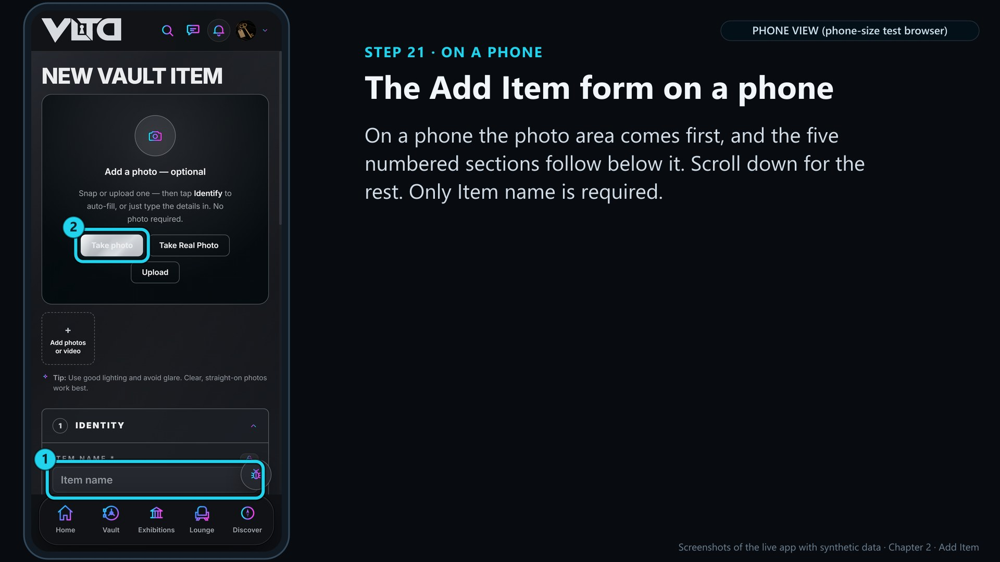
The Add Item form on a phone
On a phone the photo area comes first, and the five numbered sections follow below it. Scroll down for the rest. Only Item name is required.
Narration and evidence
On a phone the form is one column. The photo area comes first and the five sections follow below. Only Item name is required.
Evidence: {"ok":true}
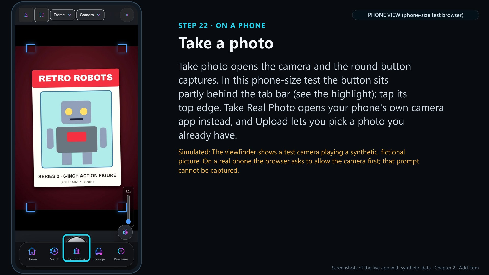
Take a photo
Take photo opens the camera and the round button captures. In this phone-size test the button sits partly behind the tab bar (see the highlight): tap its top edge. Take Real Photo opens your phone's own camera app instead, and Upload lets you pick a photo you already have.
Narration and evidence
Take photo opens the camera. Tap the round button to capture. Take Real Photo opens your phone's own camera app instead, and Upload lets you pick a photo you already have.
Evidence: true
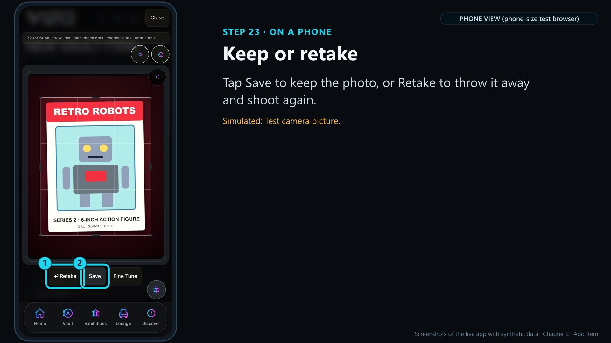
Keep or retake
Tap Save to keep the photo, or Retake to throw it away and shoot again.
Narration and evidence
Tap Save to keep the photo, or Retake to throw it away and shoot again.
Evidence: true
Type the name
Type the Item name. On a phone, the keyboard covers the lower half, so scroll the form to reach the other sections.
Narration and evidence
Type the Item name. The keyboard covers the lower half of the screen, so scroll the form to reach the other sections.
Evidence: Retro Robots Series 2 Action Figure (boxed)
Purchase price and current value
Open section 4, Value. Purchase price is what you paid. Current value stays empty if you do not know it: empty means unknown.
Narration and evidence
Open section 4, Value. Purchase price is what you paid. Leave Current value empty if you do not know it.
Evidence: ["38.00",""]
Saved
Saving takes you to your Vault, where the new item is listed.
Narration and evidence
Saving takes you to your Vault, where the new item is listed.
Evidence: {"ok":true,"path":"/vault"}
You added an item properly
- ADD ITEM opens the form. Only Item name is required.
- Photos: take, keep or retake; or upload.
- Category is optional and the form remembers your last one.
- Purchase price and value are separate; blank is unknown, 0 is zero.
- Tax, Shipping and Fees are added on the item page.
- Reload the item: everything persists.
Narration
That is the Add Item form. ADD ITEM opens it, and only the Item name is required. You take a photo and keep or retake it, or you upload one. The category is optional, and the form remembers your last choice, so check it for each new item. Purchase price and value are separate, blank means unknown and zero means zero, and extra costs are added on the item page. Reload the item at any time and everything you saved is still there. That completes Tutorial 1.
What needs your decision
Approve, or tell me what to change. I have not published anything, replaced the live Help tutorial, or started any other tutorial. Findings from recording are listed separately in FINDINGS.md; none were fixed in this pass.